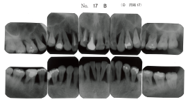

壊死性歯周疾患（Necrotizing periodontal diseases）は、歯周組織に急性の壊死性病変を生じる疾患群である。
| 疾患名 | 略称 | 病変の範囲 |
|---|---|---|
| 壊死性潰瘍性歯肉炎 | NUG | 歯肉に限局 |
| 壊死性潰瘍性歯周炎 | NUP | 歯周組織全体に波及（骨吸収あり） |
発熱、倦怠感、リンパ節腫脹を伴うことがある。
注意：急性症状が強い場合は、まず抗菌薬投与と安静を優先し、症状軽減後にスケーリングを行う。
歯の動揺度が増加するのはどれか。すべて選べ。
【解説】歯の動揺度が増加する原因は、歯周組織の支持力低下や炎症による。歯周膿瘍は急性炎症により動揺増加、歯根破折は支持の喪失、咬合性外傷は過度の咬合力による歯根膜の損傷で動揺が増加する。歯肉炎はアタッチメントロスを伴わないため動揺度は増加しない。
31歳の女性。歯の動揺を主訴として来院した。数年前から自覚するようになったという。初診時の口腔内写真（別冊No.17A）とエックス線写真（別冊No.17B）とを別に示す。
観察できるのはどれか。2つ選べ。

【解説】口腔内写真とエックス線写真から、根分岐部病変（大臼歯部のエックス線透過像）と上下顎前歯部の歯肉退縮が観察できる。多発性歯肉膿瘍や全顎的な発赤は認められない。